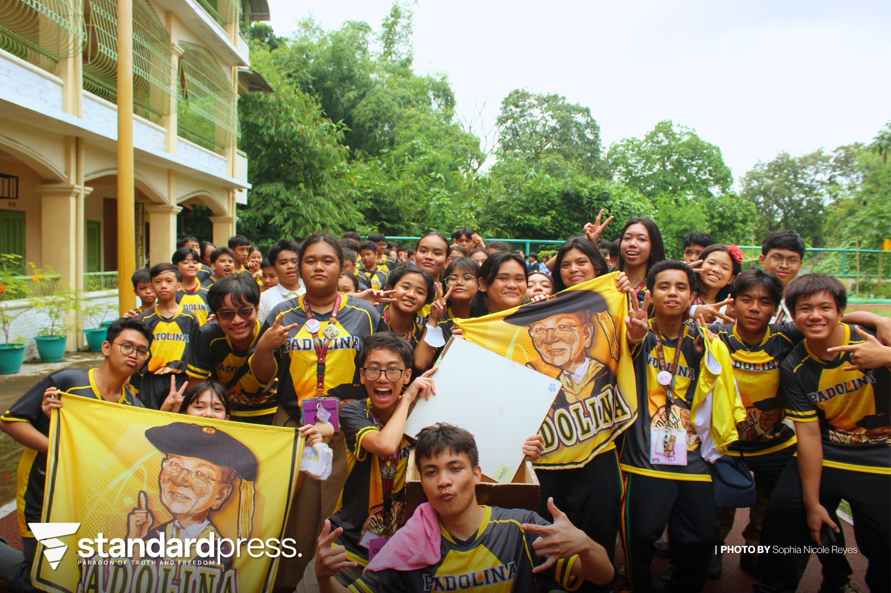
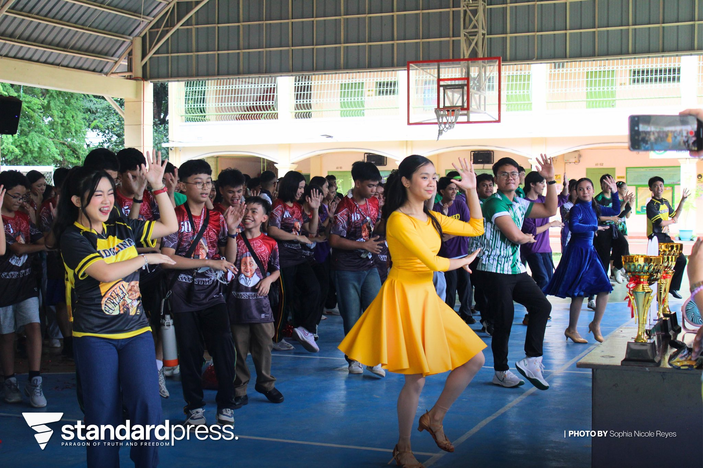

Main Page
Main Page  ICT
ICT  AP
AP A. Documentation
|
Credits: Jayzel Macawili |

Credits: Lpress |
|

Credits: Lpress |
B. Reflection
The most important thing I learned in this event is about sports and competitions. I saw the importance of these and the joy that people got from them. I could apply these in real life by participating more in the activities along with the others.
I was not able to participate actively in this event.
The way I would tell my classmates about this is that it is an event where there are many competitions, mostly about sports and athletics.
An event like this is important for every subject so that the students could enjoy, and also showcase their skills. Intrams promoted unity, cooperation, and sports.